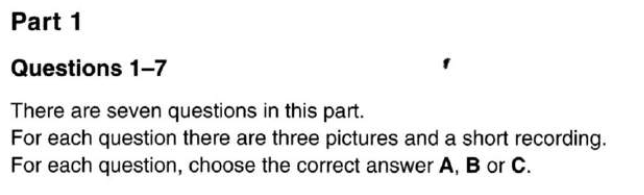
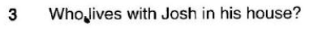
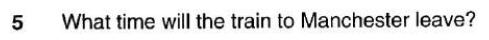
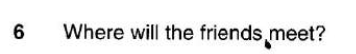
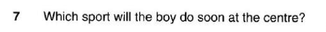

B1 – Listening Test 1
Complete all four parts, check your answers, then submit your result.
Student information
Part 1 – Questions 1–7

Woman: So you've won the teenage chef competition, Mark – congratulations!
Mark: Thanks! In the competition, you choose whether to cook a meat, fish or vegetarian dish; then you're judged on the taste and how attractive it looks. I couldn't decide between fish and vegetables – I've never been brilliant at meat dishes. Then I found the judge was an expert in cooking fish, which worried me, so I went for my other choice – and won!
Girl: Excuse me, I think I left my book on this table – have you seen it?
Man: Oh yes. I took it inside with the empty glass when I cleared the table. I gave it to the manager, who put it with the other lost property. He keeps it all in the drawer of his desk.
Girl: I see. Where is he now?
Man: He's on the phone inside the café. Why don't you go inside – he'll be finished in a minute.

Girl: Does your house seem empty now your sister's left home, Josh?
Josh: Not really. My grandmother's moved into her room, and she doesn't go out much. It's really nice having her there because my dad never comes home until later, and if my mum's out for the evening, Grandma cooks supper for me.
Boy: Have you packed for your holiday?
Girl: No, I need to go shopping before I can do that. Last holiday, my suitcase handle got broken, so I need something new to put all my stuff in. But suitcases are so heavy to carry.
Boy: I always take a backpack – you can carry more that way.
Girl: Yes, I thought about one of those, but good-quality ones are expensive. I'll get one of those big sports bags. You know, one you can pull along. They don't cost much, so it doesn't matter if it gets torn.

Man: The train arriving at platform six is the 11.45 from Manchester. The train due to arrive at platform four in approximately five minutes is the delayed 11.30 train to Manchester. The train will now depart at 11.50 and travel non-stop. We apologise to passengers for the delay. Refreshments will not be available on this train.

Kimberley: Hi, it's Kimberley. I got your message and I'd love to go to the movies. There's a film called SpyGame, or a comedy – I don't mind which... Shall we meet outside the cinema?
Girl: Or, I know, at the burger bar on the corner. We could have a snack before we go in or we could meet at the bus station.
Kimberley: Mum's driving me into town this afternoon, to buy some trainers, so I won't be near the station. But something to eat first is a good idea. Shall we say 6 o'clock?
Girl: OK.

Boy: Have you been to the new water sports centre yet?
Girl: Oh yes, it's brilliant. There are two indoor pools, one for underwater diving and one for swimming, and you can also have sailing lessons on the lake.
Boy: That's what I'm doing there next weekend, actually. I was hoping to take waterskiing lessons, but the leaflet says they're not starting those until next year.
Part 2 – Questions 8–13
You will hear an interview with a singer called Nick Parker who plays in a band called Krispy with his sister Mel.
For each question, choose the correct answer A, B or C.
Part 3 – Questions 14–19
You will hear a man called Ben, from a young people's organisation, telling a youth group about a course they can do on Saturdays.
For each question, fill in the missing information in the numbered space.
Saturday course
Ben: Hello, everyone. Let me introduce myself – my name's Ben and I'd like to tell you about a course you can do on Saturday mornings. I'm from an organisation called 'Nature' and we run courses for young people like you to do during the weekends. Now, we know that at school you learn a lot about things like science and maths, but this course is really about giving your youth group the chance to come and find out about wildlife. It's an area that tends to get forgotten. We usually take groups like yours to a wild place that's near their home. Sometimes we go to a beach or a lake, but we've planned for your group to go to a forest. That's the closest place for you, and the easiest to get to. Now, we'd like you to come and do some activities with us. You spend six hours each week with us and the course lasts for 12 weeks, depending on the weather. That might sound like a long time, but we think you'll be sorry when it's over! Taking part in our activities means you get to do all sorts of things that you wouldn't normally be allowed to do at home. That includes how to safely climb trees, cut wood and build a fire. While you're with us, we'll also show you how to make things out of different materials. On the last course, everyone designed backpacks which they were very pleased with. This time we thought we'd get you to design and make a birdhouse. When it's finished, you can take it home and show your family. We think you'll enjoy doing this. Now, any questions...?
Part 4 – Questions 20–25
Look at the six sentences for this part. You will hear a boy called Thomas and a girl called Ruby talking about a poster for their school sports day.
Decide if each sentence is correct or incorrect. If it is correct, choose A for YES. If it is not correct, choose B for NO.
Check answers
After checking, correct answers and scripts will appear for review.
Interviewer: I'm talking to Nick Parker, the singer with the band called Krispy. Nick, your sister, Mel, plays guitar in the band too, doesn't she? Nick: Yeah. Mel's a year younger than me. We've been playing and singing together since we were... eight, nine. Dad is a guitarist and took us to hear the great bands playing live. Mel and I put on shows at school, which was a lot of fun. Mum thought we were good, but she didn't want us to get too serious about our music because of the hard lives professional musicians have. Interviewer: When did you start writing music? Nick: I've been writing since I was ten. And later Mel started working with me. We didn't have the same influences – I liked rock music and she loved world music, especially bands from Africa. But we found good ways of mixing the styles. Interviewer: Your band, Krispy, has two guys and two girls in it. How was it formed? Nick: Mel and I were playing in a concert at our college and there were two students from music school in the audience. They came to see us after the show and asked if we'd like to form a band with them. We weren't sure at first because we were much younger than them. But we agreed to try it out, and it was brilliant. Interviewer: Was the band an immediate success? Nick: Well, we spent the first year practising and writing music. During that time we all had studying to do. We played in local concerts, and the audiences enjoyed what we did. Then during one holiday we recorded two songs and sent them to a music company. They offered us a contract, but our parents said we had to finish college first. Interviewer: You've been together a few years now and you're one of the top bands. What's that like? Nick: Hard work. We travel to concerts all round the world and are never in one place for more than a few nights. The others are like an older brother and sister to me and Mel, which is good. They help us relax on our days off, and make sure we eat well. They're strict about practising too. Interviewer: Have you had any disappointments? Nick: Everything we've recorded has done well. Three singles have gone to number one, and our first album has sold over a million copies. Our second album was due out this winter, but I've been ill recently so we've started recording late, which is a pity. But for the rest, everything's fine.
Thomas: So, Ruby, what about this poster for the school sports day. How shall we start? Ruby: Well, Thomas, I think we should draw a rough copy on this paper first and then do a final copy when we've got everything right. Thomas: Good idea. Well, let's get a bigger piece of paper... that paper's too small. Ruby: I think last year's poster was 40 centimetres by 60 centimetres. Thomas: That was a good size, so there's no reason to change it and we'll make it black and white again. I think that looks best. Ruby: But wouldn't it be a good idea to show that our new sports colours are purple and yellow? Thomas: That's a good point but think of the cost! We need to do at least 20 photocopies. Ruby: Oh, I forgot about the money... of course. So, what shall we put at the top of the poster? Do you think we should have our school name there? Thomas: I'd prefer it in the centre so that it's the first thing people notice. Ruby: That's where the photograph should go, I think. And then we can put the date and the time underneath it. Thomas: OK. Which picture are we going to use? Ruby: Well, there are three here. This one of the football team isn't very good. And this one's too dark. Thomas: I prefer this photo taken last week of the baseball game. It's a very popular new sport at our school. Ruby: Fine. So that just leaves how to write the words. Do you think we should use all capital letters? Thomas: Let's see... If we put the school name and address... here. They should be in capitals but there isn't room for everything so big. Ruby: But people need to see the date and time clearly. I know... everybody knows the school address so that can be tiny. Thomas: OK. Let's try it that way. Ruby: I think it's going to be a really good poster.
Submit result
Check your answers first, then submit your result to the teacher.